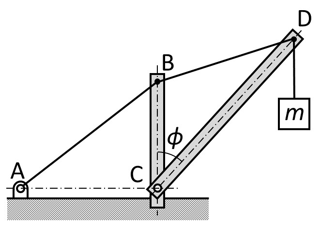
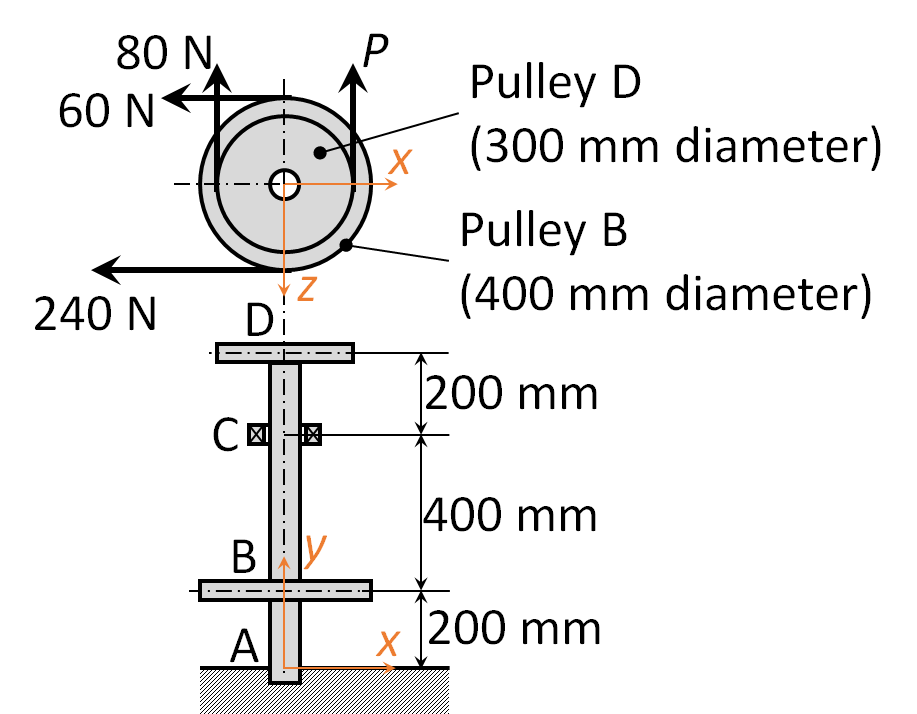

2026/10/13／第4回「力とモーメントの釣合い」の Moodle 小テスト（課題 4A〔必修〕全3問）。各問を、教材の解き方の手順①〜⑥（教材 第4回 5章）で解き直したもの。
3問に共通する道具 ：釣合いの条件 $\sum\boldsymbol F=\boldsymbol 0,\ \sum\boldsymbol M_O=\boldsymbol 0$（教材 第4回 1章）→ モーメントの基準点は自由に選べる（1.4節）→ 支点の種類と反力の数（3.2節）→ 二力部材の力は部材に沿う（4章）→ 3次元では式が6本（7章）。いちばん大事な約束 ：先に自由物体図（FBD） を描き、未知の力は正の向きに仮定 して描く。計算結果が負なら「仮定と逆向き」という意味で、間違いではない。
この解説の位置づけ 問題文と図は Moodle の画面（reference/講義資料/第4回小テスト.pdf）から転載した。解答は自作 である。ただし 4A-1(c) の数値は、Moodle 画面に正解表示（緑のチェック）として残っていた値（A：38.6, −49.9 N／B：0, 95.9 N）と一致した。4A-2・4A-3 は未提出で正解表示がないため、公式解答とは未照合。数値は Python（draft/check_quiz04.py）で検算した。4A-3 の力の向きは図から読み取ったもので、前提はその問に書く。
1 4A-1 はりの支点反力4A-1〔A 確認〜B 標準〕
図のように長さ 8 m のはりが支点 A および B の2点で水平に支持されている。点 B にはモーメント、点 C には力が図のように作用している。次の手順で、支点 A と B における支点反力をそれぞれ求めなさい。
4A-1 の図。出典：第4回小テスト（Moodle 課題 4A 問題1） 解答欄：支点 A の $x$・$y$ 成分 [N]、支点 B の $x$・$y$ 成分 [N]。(a)(b) は導出過程のレポートに書く。
解答
① 切り出す ：はり全体を1つの物体として、支えを取り去って反力に置き換える。A はピン （水平・鉛直の2成分 $A_x,A_y$）、B はローラー （支持面に垂直な1成分 $B_y$ だけ。教材 3.2節）。つまり未知数は 3 つで、2次元の釣合い式 3 本と過不足なく合う（静定、3.3節）。
A B C
Ax
Ay
By
M = 80 Nm（反時計回り）
60 N（50°）
A–B 3 m B–C 5 m（A から C まで 8 m）
(a) 自由物体図。赤は未知の反力（正の向きに仮定）。 ② 座標軸 ：問題の図どおり、右向きを $x$、上向きを $y$、反時計回りを正とする。
③ 力を成分で書く ：C の力は大きさ 60 N、水平から 50°、左下向き （図で矢印が C に向かって下りてくる）。
$$C_x=-60\cos50^\circ=-60\times0.6428=-38.57\ \mathrm N,\qquad C_y=-60\sin50^\circ=-60\times0.7660=-45.96\ \mathrm N$$
（向きの読み取り：Moodle 画面の正解 $A_x=+38.6$ N は、$A_x+C_x=0$ から $C_x<0$（左向き）と合う。これで図の読みが裏づけられる。）
④ 釣合い式（(b)） ：未知数 $A_x,A_y,B_y$ に対して
$$\sum F_x=0:\ A_x+C_x=0\qquad\sum F_y=0:\ A_y+B_y+C_y=0\qquad\sum M_A=0:\ 3B_y+8C_y+80=0$$
（なぜ A まわりか：A には未知の力 $A_x,A_y$ が2つともあり、A まわりのモーメントなら腕が 0 でどちらも消える。残る未知数は $B_y$ だけになり、1本で解ける。教材 1.4節。モーメントの項：$B_y$ は腕 3 m で反時計回りを正に $+3B_y$、$C_y$ は腕 8 m で $+8C_y$、B の偶力は反時計回りなので $+80$（偶力は腕を掛けず、そのまま足す）。）
⑤ 解く ：
$$B_y=\frac{-8C_y-80}{3}=\frac{8\times45.96-80}{3}=\frac{367.70-80}{3}=95.90\ \mathrm N$$
$$A_x=-C_x=38.57\ \mathrm N,\qquad A_y=-B_y-C_y=-95.90+45.96=-49.94\ \mathrm N$$
⑥ 確かめ ：B まわりでもモーメントを取ってみる（式を変えても同じ答えが出るはず）。$-3A_y+5C_y+80=-3(-49.94)+5(-45.96)+80=149.8-229.8+80=0$ ✓。符号：$A_y<0$ は「A では下向きの力を壁が出している」。右端 C が下に押され、B を支点に A 側が持ち上がろうとするのを、壁が引き止める向きなので自然である。
答え：(c) 支点 A：$x$ 成分 38.6 N、$y$ 成分 −49.9 N ／ 支点 B：$x$ 成分 0 N、$y$ 成分 95.9 N （B のローラーは水平方向に力を出せないので $B_x=0$）
よくある誤り (1) ローラー B に $B_x$ を置いてしまう：ローラーは垂直成分だけ（3.2節）。(2) 偶力 80 Nm に腕を掛ける：偶力はどの点まわりでも同じ値 で、そのまま足す。(3) 偶力の向きの符号を逆にする：図は反時計回り＝正。(4) 60 N を $\sin$ と $\cos$ 逆に分解する：角度は水平 から測っているので、水平成分が $\cos50^\circ$。
2 4A-2 クレーン：ピン D の自由物体図4A-2〔B 標準〕
The crane suspends a weight $m=200$ kg. Other conditions are: lengths AB = 8 m, BC = 6 m and CD = 10 m, and angle $\phi=40^\circ$. Find the force in cable BD and boom CD, by using a free-body diagram of pin D. Use $g=9.81\ \mathrm{m/s^2}$.

4A-2 の図。出典：第4回小テスト（Moodle 課題 4A 問題2） 解答欄：「ピン D の FBD を導出過程レポートに描いたか」（はい／いいえ）、$F_{BD}$・$F_{CD}$ [N]（引張りを正、圧縮を負 として、符号つきで入力）。
解答
① 切り出す ：ピン D だけを取り出す。D に働く力は3つ：重り（鉛直下向きに $W=mg$）、ケーブル BD の張力、ブーム CD の力。ケーブルとブームはどちらも二力部材 （両端だけに力を受ける）なので、力は部材に沿う（教材 4章）。これで D に働く力の向きが全部決まり、未知数は大きさ 2 つだけ。D は1点なので、使える式は力の釣合い 2 本（1.2節）で、ちょうど足りる。
② 座標軸 ：C を原点、右向きを $x$、上向きを $y$ とする。支柱 BC は鉛直で、B = (0, 6) m。ブームは鉛直から $\phi=40^\circ$ 傾くので、
$$\mathrm D=(10\sin40^\circ,\ 10\cos40^\circ)=(6.428,\ 7.660)\ \mathrm m$$
（AB = 8 m の長さは、ピン D の釣合いには要らない。A の位置は D には効かず、ケーブルが「B から D へ」一直線に張られているという事実だけが効く。図の情報が全部必要とは限らない。）
D
F_BD（B 向き）
F_CD（C 向き）
W = mg
(a) ピン D の自由物体図。ケーブル・ブームの力は「D から部材の向き」（引張り＝正）に仮定。 ③ 力を「単位ベクトル × 大きさ」で書く 。D から B・C へ向かう単位ベクトルを使う（引張りは部材が D を引くので、D から相手の端に向かう向き）。
$$\overrightarrow{\mathrm{DB}}=(0-6.428,\ 6-7.660)=(-6.428,\ -1.660),\quad |\overrightarrow{\mathrm{DB}}|=\sqrt{6.428^2+1.660^2}=6.639\ \mathrm m$$
$$\boldsymbol u_{B}=(-0.9682,\ -0.2501),\qquad \boldsymbol u_{C}=\frac{\overrightarrow{\mathrm{DC}}}{10}=(-\sin40^\circ,\ -\cos40^\circ)=(-0.6428,\ -0.7660)$$
$$W=mg=200\times9.81=1962\ \mathrm N\quad\Rightarrow\quad \boldsymbol W=(0,\ -1962)$$
④ 釣合い式 ：$F_{BD}\boldsymbol u_B+F_{CD}\boldsymbol u_C+\boldsymbol W=\boldsymbol 0$ を成分で書く。
$$x:\ -0.9682\,F_{BD}-0.6428\,F_{CD}=0\qquad y:\ -0.2501\,F_{BD}-0.7660\,F_{CD}-1962=0$$
⑤ 解く ：$x$ 式から $F_{CD}=-\dfrac{0.9682}{0.6428}F_{BD}=-1.5062\,F_{BD}$。これを $y$ 式へ代入する（未知数を1つに減らすため）：
$$-0.2501F_{BD}-0.7660(-1.5062F_{BD})=1962\ \Rightarrow\ (-0.2501+1.1537)F_{BD}=1962\ \Rightarrow\ F_{BD}=\frac{1962}{0.9036}=2171\ \mathrm N$$
$$F_{CD}=-1.5062\times2171=-3270\ \mathrm N$$
⑥ 確かめ ：(i) $x$ 式：$-0.9682\times2171+0.6428\times3270=-2102+2102=0$ ✓。(ii) $y$ 式：$-0.2501\times2171+0.7660\times3270-1962=-543+2505-1962=0$ ✓。(iii) 符号の意味：$F_{BD}>0$ ＝ケーブルは引張り（ケーブルは引張りしか受けないので妥当）。$F_{CD}<0$ ＝ブームは圧縮 （斜めのブームが重りを支えるのでつぶされる向きで妥当）。(iv) $|F_{CD}|=3270$ N は重り 1962 N より大きい：ブームの鉛直成分だけで重りを支えるなら $1962/\cos40^\circ\approx2561$ N 以上が必要で、さらにケーブルの引く力が加わるので桁として合っている。
答え：$F_{BD}=+2171\ \mathrm N$（引張り、≒ 2.17 kN）、$F_{CD}=-3270\ \mathrm N$（圧縮、≒ 3.27 kN）
よくある誤り (1) 単位ベクトルの向きを「D から B」ではなく「B から D」にして、符号が逆になる：自由物体図の仮定（引張り＝D から相手へ）と式の向きを必ずそろえる。(2) ケーブルの角度を「A–B の傾き」で求めてしまう：ピン D に効くのは B–D の向き。(3) $\phi$ を水平から測った角と取り違える：$\phi$ は鉛直の支柱とのなす角。(4) 重量を $m$（kg）のまま入れる：力は N なので $mg$。
3 4A-3 滑車つき軸の3次元の釣合い4A-3〔C 発展〕
図のように、重量 48 N および 36 N の2つの滑車が、重量 160 N の垂直軸の B 点および D 点にそれぞれ取り付けられている。$x$ 軸に平行な 60 N および 240 N の力が B 点の滑車のベルトを引っ張っている。$z$ 軸に平行な 80 N および $P$ (N) の力が D 点の滑車のベルトを引っ張っている。点 A と点 C は軸受で支えられており、摩擦は無視できるものとする。点 C の軸受は垂直方向の荷重を一切支えていない。このとき、力 $P$、および点 A と点 C における反力を求めなさい。

4A-3 の図（上：真上から見た図、下：側面図）。出典：第4回小テスト（Moodle 課題 4A 問題3） 解答欄：$P$ [N]、$\boldsymbol R_A=[\,\square\ \boldsymbol i\ \ \square\ \boldsymbol j\ \ \square\ \boldsymbol k\,]$ N、$\boldsymbol R_C=[\,\square\ \boldsymbol i\ \ \square\ \boldsymbol j\ \ \square\ \boldsymbol k\,]$ N。
解答
① 切り出す ：軸＋2つの滑車を1つの物体にする（ベルトは外力として扱う）。A は軸受で、軸方向（$y$）の荷重も支える。C は問題文により $y$ 方向の力を出さない。したがって未知数は $A_x,A_y,A_z,\ C_x,C_z,\ P$ の 6 個で、3次元の釣合い式 6 本と一致する（教材 7.1節）。
② 座標軸 ：図の座標。原点は A、$y$ は軸に沿って上、$x$ は右、$z$ は上から見た図で下向き（右手系）。高さは A: 0、B: 200、C: 600、D: 800 mm。
③ 力を成分で書く（図からの読み取り） ：上から見た図で、矢印の位置と向きを読み取る。大きい円（直径 400 mm）が B、小さい円（直径 300 mm）が D。
$-x$ 向き （図で左向き）。
$-z$ 向き 。
（読み取りの前提：どの滑車にどの力が掛かるかは、問題文の「$x$ 軸に平行な 60 N・240 N が B」「$z$ 軸に平行な 80 N・$P$ が D」と、矢印を置いた円の大きさが一致することで確認した。矢印が上向き＝$-z$ は、図の $z$ が下向きであることから決まる。）
力 着力点 $(x,y,z)$ [mm] 力ベクトル [N] B の 60 N (0, 200, −200) (−60, 0, 0) B の 240 N (0, 200, 200) (−240, 0, 0) D の 80 N (−150, 800, 0) (0, 0, −80) D の $P$ (150, 800, 0) (0, 0, $-P$) 軸受 C の反力 (0, 600, 0) ($C_x$, 0, $C_z$) 軸受 A の反力 (0, 0, 0) ($A_x$, $A_y$, $A_z$)
④ 釣合い式 ：力が $(F_x,0,F_z)$ の形のとき、$\boldsymbol r\times\boldsymbol F$ の成分は式 (2.54) より
$$M_x=yF_z,\qquad M_y=zF_x-xF_z,\qquad M_z=-yF_x$$
（なぜ A まわりか：A の反力3成分は腕 0 で消えるので、モーメント3本には $C_x,C_z,P$ だけが残る。重量は $x=z=0$ の軸上で $y$ 向きなので、モーメントを作らない。）
$P$ の決定（$y$ 軸まわり＝ベルトのトルクの釣合い） ：各力の $M_y=zF_x-xF_z$ を足す（単位 N·mm）。
（物理的な意味：B の滑車はベルトの差 $240-60=180$ N × 半径 200 mm $=36000$ N·mm で軸を回そうとし、D の滑車は $(P-80)\times150$ N·mm で逆に回そうとする。軸受は摩擦なしなのでこの2つが打ち消し合う。$(320-80)\times150=36000$ ✓。）
$x$ 軸・$z$ 軸まわり（C の反力） ：
力の釣合い（A の反力） ：
$$\sum F_x:\ A_x+C_x-60-240=0\Rightarrow A_x=300-100=200\ \mathrm N$$
$$\sum F_z:\ A_z+C_z-80-P=0\Rightarrow A_z=400-533.3=-133.3\ \mathrm N$$
$$\sum F_y:\ A_y-160-48-36=0\Rightarrow A_y=244\ \mathrm N$$
⑥ 確かめ ：(i) $y$ 軸まわりのモーメントが 0 になるのを上で確認済み（$P=320$ N）。(ii) A ではなく C まわり で $M_x=yF_z$ を取り直す（C を基準にすると、A の腕は $y=-600$、D の腕は $+200$）：$-600A_z+200(-80-320)=-600(-133.3)-80000=80000-80000=0$ ✓。(iii) $x,z$ 方向の力の合計が 0 になることも Python で確認した。(iv) $A_y=244$ N は全重量（160+48+36）で、C が鉛直方向を支えないことと合う。
答え：$P=320$ N、$\boldsymbol R_A=[\,200\ \boldsymbol i\ \ 244\ \boldsymbol j\ \ -133.3\ \boldsymbol k\,]$ N、$\boldsymbol R_C=[\,100\ \boldsymbol i\ \ 0\ \boldsymbol j\ \ 533.3\ \boldsymbol k\,]$ N
よくある誤り (1) 図の $z$ が下向き であることを忘れ、上向きの矢印を $+z$ にする：$P$ や $A_z,C_z$ の符号が全部ずれる。(2) $y$ 軸まわりのモーメントの釣合い（$P$ の決定）を忘れる：未知数 6 個に対して式が 6 本必要で、$\sum M_y=0$ がその1本。(3) C に $C_y$ を置く：問題文で「垂直方向を支えない」と明示されている。(4) mm と m の混在：腕を mm で通すなら、モーメントは N·mm のまま最後まで通す（両辺の単位がそろっていれば約分される）。
4 まとめ・チェックリスト
□ まず自由物体図を描き、未知の力を正の向きに仮定できる（全問）。
□ ピン・ローラーの反力の数を言える（ピン：2成分、ローラー：面に垂直な1成分）（4A-1）。
□ 偶力はどの点まわりでも同じ値で、腕を掛けずに足すと説明できる（4A-1）。
□ 未知の力が集まる点まわりでモーメントを取って、未知数を減らせる（4A-1・4A-3）。
□ 二力部材の力は部材に沿うので、向きが既知で大きさだけが未知になると使える（4A-2）。
□ 「大きさ × 単位ベクトル」で斜めの力を成分に直せる（4A-2）。
□ 引張りを正、圧縮を負として符号つきで答えられる（4A-2）。
□ 3次元では式が6本あり、軸まわりのモーメントも立てることを使える（4A-3）。
□ 図の座標軸の向き（特に $z$ が下向き）を、力と位置の符号に正しく反映できる（4A-3）。
□ 別の点まわりで式を立て直す、という方法で検算できる（全問）。
出典：問題文と図は第4回小テスト（Moodle 課題 4A）の画面より転載（個人の学習用）。解答・解説は自作。4A-1 の最終値は Moodle 画面の正解表示と一致、4A-2・4A-3 は公式解答と未照合。数値は Python（draft/check_quiz04.py）で検算済み。
INDEX 目次LESSON ← 教材：第4回 力とモーメントの釣合い